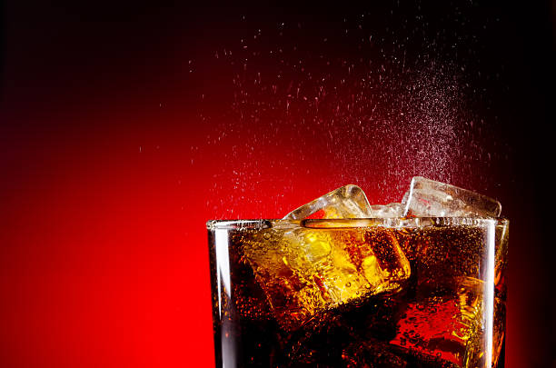

Delicious Coca Cola with Ice

This drink will pep you right up, at the small cost of your physical and mental health.
Ingredients
- Coke!
- Ice
- A Coca-Cola branded glass
- Optional A straw (but not a plastic one, think of the turtles)
Steps
- Open your can or bottle of coke (don't forget to throw the bottle in the ocean afterwards, Coka Cola are the number-one hard plastic polluter in the world. don't you know!
- Pour the cola into the the Coca Cola branded glass.
- Add ice for coolness.
- Optional Add a straw in a futile attempt for the coke to bypass your teeth on its way down.
- Marvel at how the ergonomic design of the glass makes you consume two thirds of the drink when it only looks like you've drunk half.